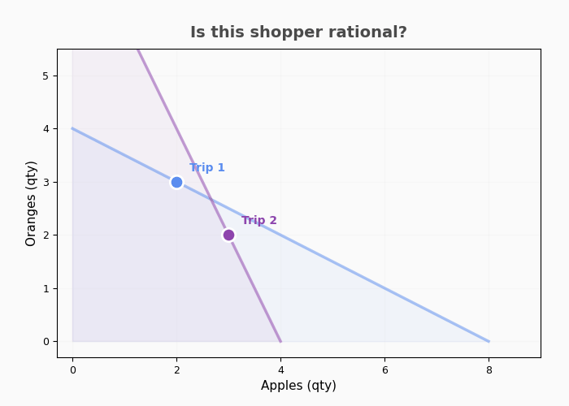
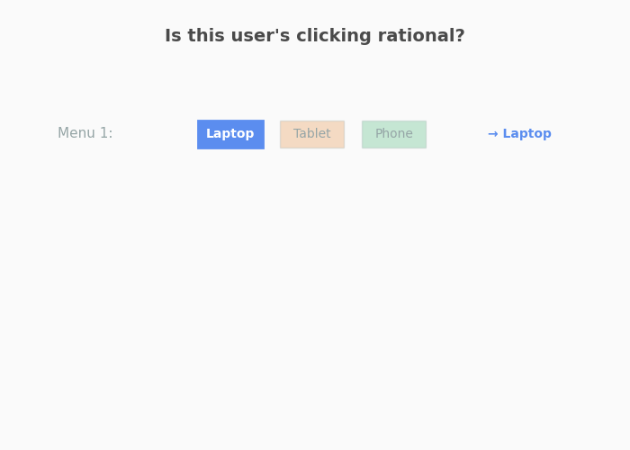

Preference Graphs#
Turn raw choices into a preference graph. Detect cycles and quantify how rational the behavior is — at scale. PrefGraph powers analysis for shopper baskets, recommender logs, and LLM decisions.
Every choice reveals a preference edge: “A was chosen over B.” These edges form a preference graph. If the graph is acyclic, a coherent ranking exists. If it has cycles, the choices are inconsistent — and PrefGraph scores how much (0 = incoherent, 1 = perfectly rational).
Build & Test
Budget data (prices × quantities) → observation graph. Menu data (menus × choices) → item graph. Test GARP, SARP, WARP for cycles via Floyd-Warshall and Tarjan SCC.
Score & Recover
CCEI, MPI, Houtman-Maks, VEI — each user gets a 0-to-1 rationality score. Then recover utility functions, welfare bounds, or detect IIA violations.
Scale
Rust backend (Rayon parallel, HiGHS LP). 49K users/sec on GARP. Engine for batch, Functions for deep dives. Python fallback available.
pip install prefgraph
Why Preference Graphs?#
Most approaches assume a model of preferences first, then fit parameters. Preference graphs work backwards from raw choices, build the revealed preference graph, and ask “is it acyclic?” No assumptions about what people want, just a consistency check on what they did.
A cycle in the preference graph (A > B > C > A) means no ranking explains the choices. Detecting and measuring these cycles is what PrefGraph does, using Floyd-Warshall, Tarjan SCC, and Karp’s algorithm on the preference graph.
Inconsistency is not always bad. It can reflect changing preferences, exploration, or noise. However, sometimes we prefer consistency.

Budget choices. A shopper buys goods at given prices. Budget lines show what was affordable. When chosen bundles sit inside each other's budget lines, that's a contradiction — CCEI measures how much you'd need to shrink budgets to fix it.

Menu choices. A user picks one option from a set. Picking Laptop over Tablet in one menu, then Tablet over Laptop in another, is a contradiction — HM counts how many choices to throw out to fix it. Houtman & Maks (1985).
Two Core Data Types#
Budget Data (prices + quantities) Menu Data (menus + choices) ─────────────────────────────── ──────────────────────────
1. Load → BehaviorLog 1. Load → MenuChoiceLog
2. Rational? → validate_consistency() 2. Rational? → validate_menu_sarp()
3. How much? → compute_integrity_score() 3. How much? → compute_menu_efficiency()
4. Segment users by score 4. Segment users by score
LLM Consistency Benchmark#
Do LLMs have stable action rankings? We build preference graphs from gpt-4o-mini decisions across 5 enterprise scenarios (support triage, alert routing, content moderation, job screening, procurement) and test for cycles. Full results: LLM Consistency Benchmark.
Key takeaways#
LLMs are mostly consistent: they usually pick the same thing even if you change the options; only a small share of menus make them switch.
When they do switch, it’s predictable—extreme options nudge them to the middle (jobs) and lenient options make them stricter (content)—and the best instructions depend on the task (no one-size-fits-all).
Summary metrics#
Scenario |
SARP pass (det/stoch) |
IIA (det/stoch) |
Mixed menus (%) |
Det↔Stoch agree (%) |
|---|---|---|---|---|
Support |
88 / 90 |
3 / 3 |
11 |
95.8 |
Alert |
92 / 90 |
2 / 3 |
8 |
96.6 |
Content |
82 / 76 |
9 / 12 |
12 |
95.5 |
Jobs |
74 / 78 |
15 / 14 |
8 |
97.6 |
Procurement |
84 / 83 |
8 / 6 |
12 |
97.7 |
Preference graphs reveal what accuracy benchmarks miss: decoy/compromise effects (jobs), scenario‑dependent prompt effects (decision‑tree 100% on procurement but weak on jobs), and severity anchoring even on “clear” content inputs.
Det = temp=0 deterministic; Stoch = majority‑vote at temp=0.7 with K=20. Mixed menus = percent of menus with non‑unanimous responses across K reps.
E-commerce Benchmarks#
Seven public datasets, 167K users, LightGBM with 5-fold stratified CV. Full results: E-commerce Benchmarks.
Dataset |
N |
Target |
Baseline |
+RP |
|---|---|---|---|---|
Dunnhumby |
2,222 |
High Spender |
0.960 |
0.960 |
Open E-Commerce |
4,694 |
Churn |
0.846 |
0.846 |
H&M |
46,757 |
High Spender |
0.763 |
0.762 |
Instacart |
50,000 |
High Novelty |
0.765 |
0.767 |
REES46 |
8,832 |
High Engagement |
0.996 |
0.996 |
Taobao (Buy Window) |
29,519 |
High Entropy (AP) |
0.789 |
0.790 |
Budget datasets: RP adds ~0% over strong RFM baselines. On Taobao (buy‑anchored, 6h), we report multiple targets; structural outcomes (dispersion, drift) show the clearest RP gains. See full results for AP/AUC by target.
Performance#
Benchmarked on synthetic data, T=15 observations, 10 goods, M1 Mac:
Configuration |
Throughput |
Latency (per agent) |
Complexity |
|---|---|---|---|
GARP only |
~49,000 agents/sec |
20 μs |
O(T²) |
GARP + CCEI |
~2,400 agents/sec |
420 μs |
O(T² log T) |
Full suite (GARP, CCEI, MPI, HARP) |
~2,000 agents/sec |
500 μs |
O(T³) |
Menu (SARP + WARP + HM) |
~19,000 agents/sec |
50 μs |
O(N³) |